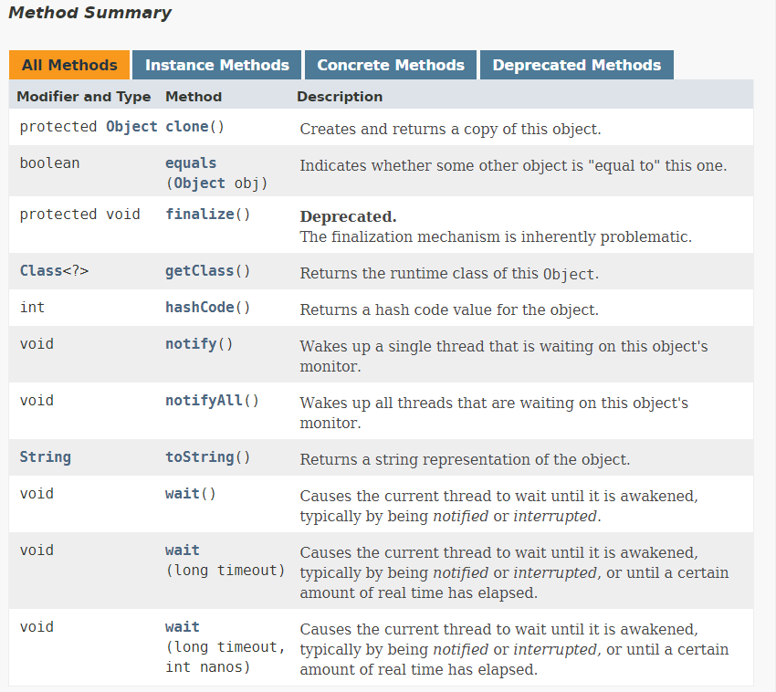
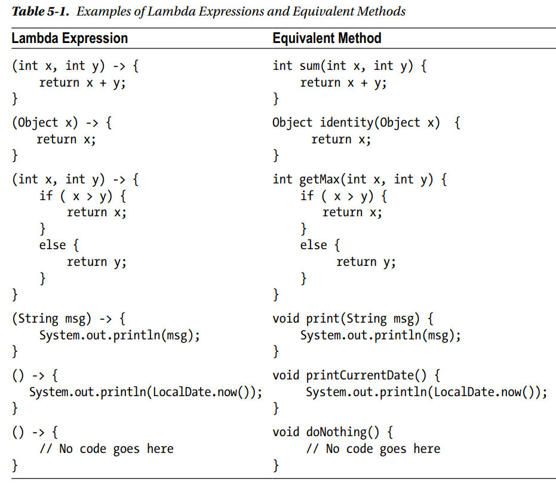
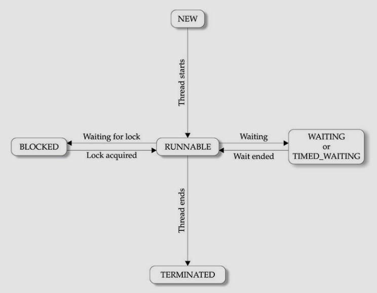

- A class that does the inheriting is called the
subclass and the class that is inherited is called the
superclass.
Therefore, a subclass is a specialized version of the superclass and adds its own unique elements.
Inheritance Basics
- class
subclass-name extends
superclass-name{
}
- You can only specify one super class for any subclass that you create. Java does not support the inheritance
of multiple superclasses into a single subclass. What you can do is create a hierarchy of inheritance in which a
subclass becomes a superclass of another subclass.
Member Access and Inheritance
- Although a subclass includes all of the members of its superclass, it cannot access those members of its
superclass that have been declared as
private. A member declared as
private is ONLY
accessible by other members of its own class. These members are not accessible by any code outside of its class,
not even by its subclasses.
A superclass variable can reference a subclass object
A reference of a superclass can be assigned a reference to any subclass derived from that superclass. It is
important to understand that it is the type of the reference variable - not the type of the object that
it refers to - that determines what members can be accessed. That is when a reference to a subclass
object is assigned to a superclass reference variable, you will have access to only those parts of the
object defined by the superclass.
Understanding super
super has two general forms. The first calls the superclass' constructor. The second is used to
access a member of the superclass that has been hidden by a member of a subclass.
a) Using super to call superclass constructors
A subclass can call a constructor defined by its superclass by use of the following form of
super:
super(arg-list)
Here
arg-list specifies any arguments needed by the constructor in the superclass.
super() must also always be the first statement that is executed inside a subclass'
constructor.
- Since constructors can be overloaded,
super() can be called using any form defined by the
superclass. The constructor executed will be the one that matches the arguments.
Notice that
super() is passed an object of type
BoxWeight - not of type
Box. This still
invokes the constructor
Box(Box obj). As mentioned earlier, a superclass variable can be used
to
reference any object derived from that class. Thus we are able to pass a
BoxWeight object to
the
Box constructor.
- So this is the key concept behind
super(): when a subclass calls
super(), it is
calling the
constructor
of its immediate superclass. Thus
super() always refers to the superclass immediately above the
calling class.
Also,
super() must always be the first statement executed inside a subclass constructor (that
is
IF you are using a
super()).
- Remember that if you are calling the constructor of the subclass, and that constructor does not contain a
super(), the default no-args constructor of the superclass will be called. If the superclass
does not have the
default constructor, the code will not compile (recall that default constructor is present in every class,
but if you are
creating a constructor of your own then you will also have to create a default constructor).
Why
is the superclass constructor always called
- The constructors of the parent classes are called, all the way up the class hierarchy through
Object, before the child class's constructor is called.
-With
super(), the superclass no-argument constructor is called.
With
super(parameter-list), the superclass constructor with a matching parameter list is
called.
Note: If a constructor does not explicitly invoke a
superclass constructor, the Java compiler automatically inserts a call to the no-argument constructor of the
superclass. If the super class does not have a no-argument constructor, you will get a compile-time error.
Object does have such a constructor, so if
Object is the only superclass, there is
no problem.
If a subclass constructor invokes a constructor of its superclass, either explicitly or implicitly, you
might think that there will be a whole chain of constructors called, all the way back to the constructor of
Object. In fact, this is the case. It is called constructor chaining, and you need to be aware
of it when there is
a long line of class descent.
b) A second use of super
The second form of
super acts somewhat like
this, except that it always refers to
the
superclass of the subclass in which it is used. The usage has the following general form:
super.member.
Here
member can be either a method or instance variable. This second form of
super is most
applicable to situations in which
member names of a subclass hide members by the same name in the superclass.
Creating a MultiLevel Hierarchy
You can build hierarchies that contain as many layers of inheritance as you like. Because of inheritance,
Shipment can make use of the previously defined classes of BoxWeight and Box, adding only the extra
information that it needs for its own, specific application.
This example illustrates an important point -
super always refers to the constructor in the
closest
superclass. The
super() in Shipment calls the constructor in BoxWeight. The
super() in BoxWeight calls the constructor in Box.
- In a class hierarchy, if a superclass constructor requires arguments, then all subclasses must pass those
arguments "up the line". This is true whether or not a subclass needs an argument of its own.
When Constructors are Executed
In a class heirarchy, constructors complete their execution in the order of derivation, from superclass to
subclass. Further, since
super() must be the first statement that is executed in a subclass'
constructor, this order is the same whether or not
super() is used. If
super() is
not used, then the default or parameterless constructor of each superclass will be executed.
Method Overriding
In a class hierarchy, when a method in a subclass has the same name as a method in its superclass, then the
method in the subclass is said to
override the method in the superclass. When an overridden method is
called from
within its subclass, it will always refer to the version of that method defined by the subclass. The version
of the method
defined by the superclass will be hidden.
Remember that method overriding occurs ONLY when the names AND the type signatures are identical. Otherwise
the two methods are simply overloaded.
Dynamic Method Dispatch
Method Overloading provides the basis for Java's:
Dynamic Method Dispatch. Dynamic method dispatch is
the mechanism by which a call to an overridden method is resolved at runtime, rather than compile time.
Dynamic method dispatch is important because this is how
Java implements run-time polymorphism. The basis for Dynamic Method Dispatch just that: a superclass
reference variable can refer to a
subclass object. Java uses this fact to resolve calls to overridden methods. This is how it is done: when an
overridden method
is called through a superclass reference, Java determines which version of that method to execute based upon
the type
of the object being referred to at the time the call occurs. Thus, this determination is made at runtime.
When different types
of objects are referred to, different versions of an overridden method will be called.
- In other words:
it is the type of the object being referred to (not the type of the reference variable)
that determines which version of an overridden method will be executed. Therefore, if a superclass
contains
a method that is overridden by a subclass, then when different types of objects are referred to through a
superclass
reference variable, different versions of the method are executed. Compare this with what we read in
A superclass variable can reference a subclass object" section.
- Another example that makes more sense is the
List interface, and the
ArrayList
and
LinkedList classes.
What
is the difference between the following:
- There's no difference between list implementations in both of your examples. There's however a difference
in a way you can further use variable myList in your code.
When you define your list as in Line 1, you can only call methods and reference members that are defined in
the List interface.
When you define your list as in Line 2, you'll be able to invoke ArrayList-specific methods and use
ArrayList-specific members
in addition to those whose definitions are inherited from List.
- Nevertheless, when you call a method of a List interface in the first example, which was implemented in
ArrayList, the method
from ArrayList will be called (because the List interface doesn't implement any methods). That's called
polymorphism. You can read up on it.
- The definition in Line 1 should always be preferred. Why though?
Almost always
List is preferred over
ArrayList because, for instance,
List can be
translated into a
LinkedList without
affecting the rest of the codebase. The only change that we will have to make in the codebase is change the
Line1 to
new LinkedList<SomeObject>().
When you do, in fact, have to use methods that are specific ONLY to
ArrayList, you can convert
List
to
ArrayList very easily.
Most common error is to accidentally use an ArrayList method, without that being necessary. Changing
ArrayList to List or another List implementation is difficult.
Something to note is that "ArrayList specific methods" isn't limited to just methods used in ArrayList, but
their return types being changed as well.
- Occasionally, the application may require that you use methods in the ArrayList API that are not in the
List API. For example,
ensureCapacity(int),
trimToSize() or
removeRange(int, int). That is
the only sound reason for coding to the class rather than the interface,
IMO.
The above argument also holds for methods that operate on sets or return sets. They should specify
parameters of type Set:
//TODO:
You cannot write efficient code if you do not know whether random access is efficient or not.
//TODO: What is
RandomAccess?
Another
SO post discussing the same thing
Effective Java (Bloch): If appropriate interface types exist, then parameters, return values, and fields
should all be declared using interface types.
If you get into the habit of using interface types, your program will be much more flexible. It is entirely
appropriate to refer to an
object by a class if no appropriate interface exists.
Using Abstract Classes and Abstract Methods
You can require that certain methods be overridden by subclasses by specifying the
abstract
type
modifier.These
methods are sometimes referred to as
subclasser responsibility because these methods have no
implementation
specified in the superclass. Hence, a subclass MUST override them - it cannot simply use the version defined
in the superclass.
To declare an abstract method, use this general form:
abstract type name (parameter-list);
Note the closing semi-colon. No method body is present. Abstract methods CANNOT have a body. Abstract
classes can have concrete methods along with abstract methods though.
- Any class that contains one or more abstract methods MUST also be declared abstract. There can be no
objects of an abstract class. That is, an abstract class cannot be instantiated using a
new
operator. Also, you cannot declare abstract constructors, or abstract static methods. Any subclass of an
abstract method must either implement all of the abstract methods or be declared
abstract
itself.
- Although abstract classes cannot be used to instantiate objects, they can be used to create object
references.
- To declare a class abstract:
Using final with Inheritance
The keyword
final has 3 uses - the first is in creating a named constant. The other 2 uses of
final apply to inheritance.
a) Using final to prevent Overriding
- To disallow a method from being overridden, specify
final as a modifier at the start of
its
declaration. Methods declared as
final cannot be overridden.
- Methods declared as
final can sometimes also provide performance enhancement by
inlining
calls to them.
Normally, Java resolves calls to methods dynamically at run-time. This is called
late-binding.
However, since
final methods cannot be overridden, a call to one can be resolved at compile
time.
This is called
early-binding.
b) Using final to prevent Inheritance
- Sometimes, you will want to prevent a class from being inherited. To do this, precede the class
declaration with
final. Declaring a class as
final implicitly declares all of
its methods as
final too.
- As you might expect, it is illegal to declare a class as both
abstract and
final (since
an abstract class is incomplete by itself and relies upon its subclasses to provide complete
implementations).
Local Variable Type Inference and Inheritance
//TODO - keyword var
The Object Class
There is one special class,
Object, defined by Java. All other Classes are subclasses of
Object. That is,
Object is a superclass of all the other classes. This means that
a reference variable of
type
Object can refer to an object of any other class.

Notice two methods,
equals() and
toString().
- The
equals() method compares two objects. It returns
true if the objects are
equal,
and
false otherwise. The precise definition of equality can differ depending on the types of
objects
being compared.
- The
toString() method returns a string that contains a description of the object on which it
is
called. Also, this method is automatically called when an object is output using
println().
Many classes
override this method. Doing so allows them to tailor a description specifically for the types of objects
that they create.
- Notice Generics...? LOL.
Multiple Inheritance
//TODO:
https://stackoverflow.com/questions/21263607/can-a-normal-class-implement-multiple-interfaces
https://stackoverflow.com/questions/13389384/multiple-inheritance-on-java-interfaces?noredirect=1&lq=1
https://stackoverflow.com/questions/3556652/how-do-java-interfaces-simulate-multiple-inheritance?noredirect=1&lq=1
https://stackoverflow.com/questions/21263607/can-a-normal-class-implement-multiple-interfaces?noredirect=1&lq=1
https://stackoverflow.com/questions/29758213/multiple-inheritance-ambiguity-with-interface?noredirect=1&lq=1
https://stackoverflow.com/questions/995255/why-is-multiple-inheritance-not-allowed-in-java-or-c?noredirect=1&lq=1
https://stackoverflow.com/questions/13389384/multiple-inheritance-on-java-interfaces?noredirect=1&lq=1
Remember that all Collections can store ONLY references. Not values of primitive types.
Source
of UML Diagram
1) The Array List
UML Diagram
- ArrayList has 3 constructors:
a)
ArrayList(): Builds an empty Array List
b)
ArrayList(Collection<? extends E> c): Builds an Array List that is initialized with
the
elements of the Collection c in the order they are returned by the collection's iterator.
c)
ArrayList(int capacity): Builds an array list that has the specified initial capacity.
The
capacity is the size of the
underlying array that is used to store the elements. The capacity grows automatically as elements are
added to the array list.
You can increase the capacity of an ArrayList object manually by calling
ensureCapacity()
Difference between capacity and size of an Array List
So what
is going on?
ensureCapacity doesn't change the logical size of an ArrayList - it changes the
capacity,
which is the size the list can reach
before it next needs to copy values. You need to be very aware of the difference between a logical size
(i.e. all the
values in the range [0, size) are accessible, and adding a new element will add it at index size) and
the capacity
which is more of an implementation detail really - it's the size of the backing array used for storage.
Calling
ensureCapacity should only ever make any difference in terms of performance (by
avoiding
excessive copying) -
it doesn't affect the logical model of what's in the list, if you see what I mean.
void trimToSize(): This will reduce the size of the array that underlies an
ArrayList
object so that it is
precisely as large as the number of items that it is currently holding.
So, there is another question:
what happens if you call
trimToSize after you have called
ensureCapacity? Yes,
it will
trim the size of the ArrayList to
the size of the current number of elements in the ArrayList. It will not care about the capacity.
//TODO: Is there some way that we can check the underlying size of the array that is being used for the
Array List?
Obtaining an Array from an ArrayList
When working with an ArrayList you will sometimes want to obtain an actual array that contains the
contents of the list.
You can do this by calling the
toArray(), which is defined by
Collection. The
returned
array will be "safe" in
that no references to it are maintained by this list. (In other words, this method must allocate a new
array).
The caller is thus free to modify the returned array.
But
be careful while using the
toArray method. it produces a
ClassCastException.
In fact, even if you try to do it with objects, it still produces the same Exception
2) The Linked List
UML Diagram
The Linked List has 2 constructors:
a)
LinkedList(): The first constructor builds an empty linked list.
b)
LinkedList(Collection<? extends E> c): The second constructor builds a linked list
that is initialized with the elements of the Collection c.
Linked List vs Array List
From memory standpoint:
- Individual elements stored in a LinkedList takes more space than an ArrayList as LinkedList also needs
to store the node information.
To be clear, even in the worst case, ArrayList is 4x smaller than a LinkedList with the same elements.
In short, it's basically impossible
to make LinkedList win the memory comparison, and if you care about space, then calling
trimToSize() on the ArrayList will instantly
make ArrayList win again by a huge margin.
Seriously.
ArrayList wins.
- For a linked list, each node occupies AT LEAST 3 times the number of entries, because each node has a
next and prev reference as well as the entry reference.
(And in fact, it is more than 3 times, because of the space used by the nodes' object headers and
padding. Depending on the JVM and pointer size,
it can be as much as 6 times.) The only situation where a linked list will use less space than an array
list is if
you badly over-estimate the array list's initial capacity. (And for very small lists ...).
When you think about it, the only real advantage linked lists have over array lists is when you are
inserting and removing elements.
Even then, it depends on how you do it.
- Also, as far as I can tell
memory
for an ArrayList is not allotted contiguously(?).
ArrayList stores "references" or "pointers" to actual storage in an internal object array elementData.
This array of references may well be contiguous,
but is JVM specific. The actual objects being added are stored on the heap, and almost certainly won't
be contiguous, although this is JVM specific.
From Speed Standpoint:
- Prefer ArrayList if you want O(1) random access. LinkedList gives O(1)
Iterator.remove
time.
This is different from plain old
remove(int index)
which still takes O(n) time for LinkedLists in
worst-case
scenario.
-
Good comment about pre-emptively trying to
improve performance without understanding what is going on.
-
Post
about difference between Collection.remove and Iterator.remove
3) The HashSet Class
UML Diagram
HashSet extends
AbstractSet and implements the
Set interface. It
creates a collection
that uses a hash table for storage.
HashSet is a generic class that has this declaration:
class HashSet<E>.
- This class implements the
Set interface, backed by a hash table (actually a
HashMap
instance). It makes no guarantees as to the iteration order of the set;
in particular, it does not guarantee that the order will remain constant over time. This class permits the
null element.
This class offers constant time performance for the basic operations (
add,
remove,
contains and
size),
assuming the hash function disperses the elements properly
among the buckets.
- Iterating over this set requires time proportional to the sum of the HashSet instance's size (the number
of elements) plus the "capacity" of the backing
HashMap instance (the number of buckets). Thus, it's very important not to set the initial
capacity
too high (or the load factor too low) if iteration performance is important.
The following constructors are defined:
a)
HashSet(): Constructs a new, empty set; the backing HashMap instance has default initial
capacity
(16) and load factor (0.75).
b)
HashSet(Collection<? extends E> c): Initializes the hash set by using the elements of c.
c)
HashSet(int capacity): Constructs a new, empty set; the backing HashMap instance has the
specified
initial capacity and default load factor (0.75).
d)
HashSet(int capacity, float loadFactor): Constructs a new, empty set; the backing HashMap
instance
has the specified initial capacity and the specified load factor (also called fillRatio)
4) The LinkedHashSet Class
UML Diagram
The
LinkedHashSet class extends
HashSet and adds no members of its own. It is a
generic class
that has this declaration:
class LinkedHashSet<E>. Here,
E specifies the type of objects that the set
will hold. Its
constructors parallel those in HashSet. Hash table and
linked list implementation of the Set interface, with predictable iteration order. This implementation
differs from HashSet in that it maintains a doubly-linked
list running through all of its entries. This linked list defines the iteration ordering, which is the order
in which elements were inserted into the set (insertion-order).
Note that insertion order is not affected if an element is re-inserted into the set.
(//TODO: But this should again run into the same problem that happens when we compare Linked List vs Array
List. Linked Lists take way more memory. So I think LinkedHashSet should also end up taking an enormous
chunk of memory )
Like HashSet, it provides constant-time performance for the basic operations (
add,
remove,
contains and
size),
assuming the hash function disperses elements properly
among the buckets.
- Performance is likely to be just slightly below that of HashSet, due to the added expense
of maintaining the linked list, with one exception:
Iteration over a LinkedHashSet requires time proportional to the
size of the set, regardless of
its
capacity. Iteration over a HashSet is
likely to be more expensive, requiring time proportional to its capacity. This implementation spares its
clients from the unspecified, generally chaotic
ordering provided by HashSet, without incurring the increased cost associated with
TreeSet.
Linked Hash Set has 4 Constructors:
a)
LinkedHashSet(): Constructs a new, empty linked hash set with the default initial capacity
(16) and load
factor (0.75).
b)
LinkedHashSet(int initialCapacity): Constructs a new, empty linked hash set with the
specified initial capacity and the default load factor (0.75).
c)
LinkedHashSet(int initialCapacity, float loadFactor): Constructs a new, empty linked hash
set with the
specified initial capacity and load factor.
d)
LinkedHashSet(Collection<? extends E> c): Constructs a new linked hash set with the
same elements as
the specified collection.
5) The TreeSet Class
UML Diagram
A
NavigableSet implementation based on a
TreeMap. The elements are ordered using
their natural
ordering, or by a
Comparator provided at
set creation time, depending on which constructor is used. This implementation provides guaranteed
log(n) time cost for the basic operations (
add,
remove and
contains).
Note that the ordering maintained by a set (whether or not an explicit comparator is provided) must be
consistent
with equals if it is to correctly implement
the
Set interface. (See
Comparable or
Comparator for a precise definition
of consistent
with equals.) This is so because the
Set
interface is defined in terms of the equals operation, but a
TreeSet instance performs all
element
comparisons using its
compareTo (or
compare) method,
so two elements that are deemed equal by this method are, from the standpoint of the set, equal. The
behavior of a set is well-defined even if its ordering is
inconsistent with equals; it just fails to obey the general contract of the Set interface.
TreeSet has the following Constructors:
a)
TreeSet(): Constructs a new, empty tree set, sorted in ascending order according to the
natural ordering
of its elements.
b)
TreeSet(Collection< extends E> c) : Constructs a new tree set containing the elements
in the
specified collection, sorted according to the natural ordering of its elements.
c)
TreeSet(Comparator<? super E> comparator): Constructs a new, empty tree set, sorted
according to the
specified comparator.
d)
TreeSet(SortedSet<E> s): Constructs a new tree set containing the same elements and
using the same
ordering as the specified sorted set.
6) Priority Queue Class
7) Array Deque Class
Accessing a Collection via an Iterator
UML Diagram
- Iterators allow you to cycle through the elements in a collection.
iterator allows you to
cycle through a collection, obtaining and removing elements.
ListIterator extends
Iterator
to
allow bi-directional traversal of a list, and the modification of elements.
- The
Iterator and the
ListIterator are generic interfaces:
interface Iterator <E>
interface ListIterator <E>
Here
E specifies the type of object being iterated.
Using an Iterator
Before you can access a collection through an iterator, you must obtain one. Each of the collection classes
provides an
iterator() method that returns an iterator to the start of the collection. By using this
iterator
object, you can access each element
in the collection, one element at a time. In general, to use an iterator to cycle through the contents of a
collection, follow these steps:
1. Obtain an iterator to the start of the collection by calling the collection's iterator()
method.
2. Set up a loop that makes a call to hasNext(). Have the loop iterate as long as hasNext()
returns true.
3. Within the loop, obtain each element by calling next().
For collections that implement List, you can also obtain an iterator by calling listIterator().
A list iterator gives you the ability to access the collection in either the forward or backward direction
and lets you modify an element.
Otherwise, ListIterator is used just like Iterator.
For-Each Alternative to Iterators
- Can only be used ot cycle through a collection in the forward direction
- You cannot modify the contents of a collection using for-each loop
The RandomAccess Interface
-//TODO
Working with Maps
UML Diagram
- A
map is an object that stores associations between keys and values, or
key/value pairs.
Given a key, you can find its value.
Both keys and values are objects. The keys must be unique, but the values may be duplicated. Some maps can
accept a null key and null values, others cannot.
-
Map is generic and is declared as shown here:
interface Map <K, V>
Here
K specifies the types of keys, and
V specifies the types of values.
- There is one key point about maps that is important to mention at the outset: they don't implement the
Iterable
interface.
This means that you cannot cycle through a map using a for-each style for loop. Furthermore, you can't
obtain an iterator to a map.
However, you can obtain a collection-view of a map, which does allow the use of either the for loop or an
iterator.
- The Map interface provides three
collection views:
a)
Set<Map.Entry<K,V>> entrySet(): Returns a
Set view of the mappings
contained in this
map. The
set is backed by the map, so changes to the map are reflected in the set, and vice-versa. If the map is
modified while an iteration over the set is in progress (except through the iterator's own remove()
operation,
or through the setValue() operation on a map entry
returned by the iterator) the results of the iteration are undefined. The set supports element removal,
which removes the corresponding mapping from the map, via the Iterator.remove, Set.remove, removeAll,
retainAll and clear operations. It does not support the add or addAll operations.
b)
Set<K> keySet(): Returns a
Set view of the keys contained in this map.
c)
Collection<V> values(): Returns a
Collection view of the values contained
in this map.
What's up with the 3 different return types?
- The
order of a map is defined as the order in which the iterators on the map's collection views
return their elements.
Some map implementations, like the
TreeMap class, make specific guarantees as to their order;
others,
like the
HashMap class, do not.
- Note: great care must be exercised if mutable objects are used as map keys. The behavior of a map is not
specified if the value of an object is
changed in a manner that affects
equals comparisons while the object is a key in the map. A
special
case of this prohibition is that it is
not permissible for a map to contain itself as a key. While it is permissible for a map to contain itself as
a value, extreme caution is advised:
the
equals and
hashCode methods are no longer well defined on such a map.
- To put a value into a map, use
put(K key, V value) specifying the key and the value.
get(Object key) returns the value to which the specified key is mapped, or null if this map
contains
no mapping for the key.
The SortedMap Interface
UML Diagram
- The
SortedMap interface extends
Map. It ensures that entries are maintained in
the ascending
order according to their keys.
- The map is ordered according to the natural ordering of its keys, or by a
Comparator
typically
provided at sorted map creation time.
This order is reflected when iterating over the sorted map's collection views (returned by the
entrySet(),
keySet() and
values() methods).
(This interface is the map analogue of SortedSet.)
-
SortedMap is generic and is declared here:
interface SortedMap<K, V>. Here
K specifies the type of keys, and
V specifies the type of values.
- All keys inserted into a sorted map must implement the
Comparable interface (or be accepted
by the
specified comparator).
Furthermore, all such keys must be mutually comparable:
k1.compareTo(k2) (or
comparator.compare(k1,
k2)) must not throw a
ClassCastException for any keys k1 and k2 in the sorted map.
- Sorted maps allow very efficient manipulations of submaps (in other words, subsets of a map). To obtain a
submap, use
headMap(),
tailMap(), or
subMap(). The submap returned by these
methods is backed by
the invoking map.
Changing one changes the other. To get the first key in the set, call
firstKey(). To get the
last
key, use
lastKey().
The NavigableMap Interface
UML Diagram
The NavigableMap interface extends
SortedMap and declares the behavior of a map that supports
the
retrieval of entries based on the closest match to a given key or keys.
-
NavigableMap is a generic interface that has
this declaration:
interface NavigableMap<K,V>. Here,
K specifies the type of
the
keys, and
V specifies the type of the values associated with the keys.
The Map.Entry Interface
UML Diagram
- The
Map.Entry interface enables you to work with a map entry. For example, recall that the
entrySet()
method declared by the
Map interface returns a
Set containing the map entries.
Each of these
set elements is a
Map.Entry object.
-
Map.Entry is generic and is declared like this:
interface Map.Entry<K, V>.
Here
K
specifies the type of keys, and
V specifies the type of Values.
- Map.Entry is a key and its value combined into one class. This allows you to iterate over
Map.entrySet()
instead of having to iterate over
Map.keySet(), then getting the value for each key.
- Some SO posts on how to do this:
How to iterate over a HashMap:
Map.Entry: How to use it?
Map.Entry interface in java
How do we remove a <key, value> pair
How to create a new Entry(K, V) object
Java - How to
create new Entry (key, value)
As of Java 9, if you want to create an immutable entry, you can use the
Map.entry() method.
//TODO: Can you add the created entry back to a Hash Map without unpackaging the entry by using
entry.getKey() and
entry.getValue()
If you want to create a mutable entry, in that case you will use
AbstractMap.SimpleEntry
The Map Classes
UML Diagram
AbstractMap is a superclass for all concrete Map implementations. The concrete implementations
are the following
1) The HashMap Class
UML Diagram
The
HashMap class extends
AbstractMap and implements the
Map
interface. It uses a hash table to store the map. This allows the execution time of
get() and
put() to remain constant even for large sets. Remember that the
put() method
automatically replaces any preexisting value that is associated with the specified key with the new value.
HashMap is a generic class that has this declaration:
class HashMap<K, V>. Here
K specifies the type of the key, and
Vspecifies
the type of the Value.
The following Constructors are defined:
a)
HashMap: Constructs a default Hash Map
b)
HashMap(Map <? extends K, ? extends V > m): Initializes the Hash Map by using the
elements of m
c)
HashMpa(int capacity): Initializes the capacity of the Hash map to
capacity.
d)
HashMap(int capacity, float fillRatio): Initializes both the
capacity and the
fillRatio
by using the arguments.
2) The TreeMap Class
UML Diagram
The
TreeMap class extends
AbstractMap and implements the
NavigableMap
interface. It creates maps stored in a tree structure. A
TreeMap provides an efficient means of
storing
key/value pairs in sorted order and allows rapid retrieval. You should note that, unlike a hash map, a tree
map guarantees that its elements will be sorted in ascending key order.
TreeMap is a generic
class that has
this declaration:
class TreeMap<K, V> Here,
K specifies the type of keys, and
V specifies the type of values.
The
TreeMap constructors are:
a)
TreeMap: Constructs an empty tree map that will be sorted by using the natural order of its
keys.
b)
TreeMap(Comparator <? super K> comp): Constructs an empty tree-based map that will be
sorted by using the
Comparator comp.
c)
TreeMap(Map <? extends K, ? extends V > m): Initializes a tree map with the entries from
m, which will be sorted by using the natural order of the keys.
d)
TreeMap(SortedMap <K, ? extends V > sm): Initializes a tree map with the entries from
sm, which will be sorted in the same order as
sm.
Notice that
TreeMap sorts the keys. However, in this case, they are sorted by first name
instead of last name. You can alter this behavior by specifying a comparator when the map is created.
3) The LinkedHashMap Class
UML Diagram
LinkedHashMap extends
HashMap. It maintains a linked list of the entries in the
map, in the order in which they were inserted. This allows insertion-order iteration over the map. That is,
when iterating through a collection-view of a
LinkedHashMap, the elements will be returned in
the order in
which they were inserted. You can also create a
LinkedHashMap that returns its elements in the
order in
which they were last accessed.
LinkedHashMap is a generic class that has this declaration:
class LinkedHashMap<K,V>.
Here,
K specifies the type of keys, and
V specifies the type of values.
LinkedHashMap defines the following constructors:
a)
LinkedHashMap(): Constructs a default Linked Hash Map
b)
LinkedHashMap(Map<? extends K, ? extends V> m): initializes the LinkedHashMap with the
elements from
m.
c)
LinkedHashMap(int capacity): initializes the capacity.
d)
LinkedHashMap(int capacity, float fillRatio): initializes both capacity and fill ratio. The
meaning of capacity and fill ratio are the same as for HashMap. The default capacity is 16. The default
ratio is 0.75.
e)
LinkedHashMap(int capacity, float fillRatio, boolean Order): allows you to specify whether
the elements will be stored in the linked list by insertion order, or by order of last access. If
Order is
true, then access order is used. If
Order is false, then insertion order is used.
Comparators
//TODO........................
Notes from book: Beginning Java 8 Language Features by Kishori Sharan
What is a Lambda Expression
- A Lambda Expression is an unnamed block of code with a list of formal parameters and a body. An arrow
-> is used to separate the list of the parameters and the
body of the lambda expression.
- A Lambda Expression represents an
instance of a
functional interface. Every expression in
Java needs to have a type. This is its type.
- When the abstract method of a functional interface is called, it is the body of the lambda expression that
is executed.
- A lambda expression is evaluated to an instance of a functional interface. The body
of the lambda expression is not executed when the expression is evaluated.
The body of the lambda
expression is
executed when the method of the functional interface is invoked.
- Consider the following lambda expression:
(String str) -> str.length. What should be the type
of this Lambda Expression? We cannot say for sure, because it's type can be
any interface that takes
a String as an input and returns an int. The following interface can be the type of this lambda expression:
@FunctionalInterface
interface StringToIntMapper{
int strToInt(String s);
}
In the above example, whenever the
strToInt method of the interface will be called, the lambda
expression above will be executed.
- The following code snippet shows an example of everything put together:
- Java is a strongly-typed language, which means that the compiler must know the type of all expressions
used
in a Java program. a lambda expression by itself does not have a type, and therefore, it cannot be used as a
standalone
expression. The type of a lambda expression is always inferred by the compiler by the context in which it is
used.
- To jog your memory:
What is functional programming: block of code that accepts values, known as parameters, and the
block of
code is executed to compute a result. Order of execution of functions does not matter in Functional
programming since, unlike object-oriented programming, there is no state of the object that is being
changed.
What is a closure: higher order function (anonymous function that can be treated as a data
object,
meaning - it can be stored in a variable and passed around from one context to another.) packaged with
its defining environment. A closure carries with it the variables in scope when it was defined, and it
can access those variables even when it is invoked in a context other than the context in which those
variables were defined.
What does it mean to capture a variable: A
lambda expression is said to be capturing if it either access instance variables of it's enclosing
class
or local variables (final or effectively final) from it's enclosing scope.
What is the difference between an implicit and an explicit lambda expression:
Lambda expression that does not declare the types of its parameters is known as an implicit lambda
expression. A lambda expression that declares the types of its parameters is known as an explicit lambda
expression. (x, y) -> x + y is an example of an implicit Lambda Expression.
(int x, int y) -> x + y is explicit.

Syntax for Lambda Expressions
- These are some things that you can do with the parameters that are input to the Lambda Expressions.
- These are some things that you can do with the body of the lambda expressions.
- The body of a lambda expression can be a block statement or a single expression. A block statement is
enclosed in braces; a single expression is not enclosed in braces.
Target Typing
- There are two kinds of expressions in Java:
Standalone Expressions: A standalone expression is an expression whose type can be determined by
the expression without knowing the context of its use. new String("Hello"),
"Hello", new ArrayList<String>(). The types are String, String, and
ArrayList<String>.
Poly Expressions: A poly expression is an expression that has different types in different
contexts. All lambda expressions in Java are poly expressions. You must use it in a context to know its
type. For example, the expression new ArrayList<>() is a poly expression.
In this:
ArrayList<Long> idList = new ArrayList<>();, its type is
ArrayList<Long>.
Whereas in ArrayList<String> nameList = new ArrayList<>();, its type is ArrayList<String>
- The compiler infers the type of a lambda expression. The context in which a lambda expression is used
expects a type, which is called the
target type. The process of inferring the type of a lambda expression from the context is known as
target typing.
Behavior Parameterization
- Changing the behavior of a method through its parameters is known as behavior parameterization. This is
also known as passing code as data because you pass code (logic, functionality, or behavior) encapsulated in
lambda expressions to methods as if it is data.
- In the above example, instead of passing the lambda expression directly as a parameter, you could have
assigned it to a variable of the desired type (
AnotherJoiner in this case) and passed that
variable as an argument instead.
Which contexts can a Lambda Expression be used
- Lambda expressions can be used only in the following contexts:
Assignment Context: A lambda expression may appear to the right-hand side of the assignment
operator in an assignment statement.
For example: ReferenceType variable1 = LambdaExpression;
Method Invocation Context: A lambda expression may appear as an argument to a method or
constructor call.
For example: behavParam.testJoiner(LambdaExpression);
Return Context: A lambda expression may appear in a return statement inside a method, as its
target type is the declared return type of the method.
For example: return LambdaExpression;
Cast Context: A lambda expression may be used if it is preceded by a cast. The type specified in
the cast is its target type.
For example: (Joiner) LambdaExpression;
Functional Interfaces
- A functional interface is simply an interface that has exactly one abstract method.
- The following types of methods in an interface do not count for defining a functional interface:
Default Methods: Recall
default methods
were methods added to an interface that were not abstract. That is, a default
method has an implementation right there in the interface itself.
Static Methods
Public methods inherited from the Object class
Commonly used Functional Interfaces
| Interface Name |
Method |
Description |
| Function<T,R> |
R apply(T t) |
Represents a function that takes an argument of type T and returns a result of type R. |
| BiFunction<T,U,R> |
R apply(T t, U u) |
Represents a function that takes two arguments of types T and U, and returns a result of type
R.
|
| Predicate<T> |
boolean test(T t) |
In mathematics, a predicate is a boolean-valued function that takes an argument and returns true
or false. The function represents a condition that returns true or false for the specified
argument.
|
| BiPredicate<T,U> |
boolean test(T t, U u) |
Represents a predicate with two arguments. |
| Consumer<T> |
void accept(T t) |
Represents an operation that takes an argument, operates on it to produce some side effects, and
returns no result.
|
| BiConsumer<T,U> |
void accept(T t, U u) |
Represents an operation that takes two arguments, operates on them to produce some side effects,
and returns no result.
|
| Supplier<T> |
T get() |
Represents a supplier that returns a value. |
| UnaryOperator<T> |
T apply(T t) |
Inherits from Function<T,T>. Represents a function that takes an argument and
returns a result of the same type.
|
| BinaryOperator<T> |
T apply(T t1, T t2) |
Inherits from BiFunction<T,T,T>. Represents a function that takes two arguments
of the same
type and returns a result of the same type.
|
Using the Function<T,R> Interface
- There are also several specialized versions of these interfaces for frequently used
primitive data types.
-
IntFunction<R>,
LongFunction<R>, and
DoubleFunction<R>
take an int, a long, and a double as an argument, respectively, and return a value of type R.
-
ToIntFunction<T>,
ToLongFunction<T>, and
ToDoubleFunction<T> take an argument of type T and return an int, a long, and a double,
respectively.
- Similar specialized functions exist for other types of generic functions listed in the table.
- The
Function interface contains the following default and static methods:
default <V> Function<V,R> compose(Function<? super V,? extends T> before)
default <V> Function<T,V> andThen(Function<? super R,? extends V> after)
static <T> Function<T,T> identity()
- Note that the
BiFunction interface contains only the
andThen method,
not the
thenCompose method.
- So how do you use these?
- And what is the
difference
between andThen and
compose
Using the Predicate<T> Interface
- A predicate represents a condition that is either true or false for a given input.
- The Predicate interface contains the following default and static methods that let you compose a predicate
based on other predicates using logical NOT, AND, and OR.
default Predicate<T> negate()
default Predicate<T> and(Predicate<? super T> other)
default Predicate<T> or(Predicate<? super T> other)
static <T> Predicate<T> isEqual(Object targetRef)
Method References
- A method reference is shorthand to create a lambda expression using an existing method.
- Using method references makes your lambda expressions more readable and concise; it also lets you use
the existing methods.
- If a lambda expression contains a body that is an expression using a method call, you can use a method
reference in place of that lambda expression.
- The general syntax for a method reference is: <Qualifier>::<MethodName>. The
Qualifier depends on the type of the method reference. The MethodName is the name
of the method.
- The syntax for method references allows specifying only the method name. You cannot specify the parameter
types and return type of the method. Recall that a method reference is shorthand for a lambda expression.
The target type, which is always a functional interface, determines the method's details. If the method is
an overloaded method, the compiler will choose the most specific method based on the context.
- A method reference does not call the method when it is declared. The method is called later when the
method
of its target type is called.
Types of Method References
| Syntax |
Description |
| TypeName::staticMethod |
A method reference to a static method of a class, an interface, or an enum. |
| objectRef::instanceMethod |
A method reference to an instance method of the specified object |
| ClassName::instanceMethod |
A method reference to an instance method of an arbitrary object of the specified class |
| TypeName.super::instanceMethod |
A method reference to an instance method of the supertype of a particular object |
| ClassName::new |
A constructor reference to the constructor of the specified class |
| ArrayTypeName::new |
An array constructor reference to the constructor of the specified array type |
Static Method References
- A static method reference is used to use a static method of a type as a lambda expression. The type could
be a
class, an
interface, or an
enum.
Instance Method References
- An instance method is invoked on an object's reference.
- The object reference on which an instance method is invoked is known as the receiver of the method
invocation.
- //TODO: Bound Receiver, Unbound Receiver
Supertype Instance Method References
//TOOD
Constructor References
- Sometimes the body of a lambda expression may be just an object creation expression.
- The syntax for using a constructor is:
ClassName::new or
ArrayTypeName::new.
- The
ClassName is the name of the class that is to be instantiated. It cannot be the name of
an abstract class.
- The keyword
new refers to the constructor of the class.
- A class may have multiple constructors. The syntax does not provide a way to refer to a specific
constructor. The compiler selects a specific constructor based on the context. It looks at the target type
and the number of arguments in the abstract method of the target type. The constructor whose number of
arguments matches with the number of arguments in the abstract method of the target type is chosen.
- Arrays in Java do not have constructors. There is a special syntax to use constructor references for
arrays. Array constructors are treated to have one argument of int type that is the size of the array.
- The syntax for the constructor reference for arrays supports creating an array of multiple dimensions.
However, you can specify the length for only the first dimension.
Generic Method References
//TODO
Lexical Scoping
- A scope is the part of a Java program within which a name can be referred to without using a qualifier.
Classes and
methods define their own scope. Scopes may be nested.
- Even though a lambda expression looks like a method declaration, it does not define a scope of its own. It
exists in its enclosing scope. This is known as
lexical scoping for lambda expressions. For example,
when a lambda
expression is used inside a method, the lambda expression exists in the scope of the method.
- The meanings of the keywords
this and
super are the same inside the lambda
expression and its enclosing
method. Note that this is different from the meanings of these keywords inside a local and anonymous inner
class in
which the keyword
this refers to the current instance of the local and anonymous inner class,
not its enclosing class.
- Lexical scoping of a lambda expression means that variables declared in the lambda expression, including
its
parameters, exist in the enclosing scope. Simple names in a scope must be unique. It means that a lambda
expression
cannot redefine variables with the same name that already exist in the enclosing scope.
Variable Capture
-
-
SO link
explaining why Local Variables are thread safe in java
- Why does everything have to be so confusing:
SO
Link explaining why variables inside a lambda have to be final or effectively final.
- A lambda expression can access instance and class variables of a class whether they are effectively final
or not.
If instance and class variables are not final, they can be modified inside the body of the lambda
expressions. a lambda
expression keeps a copy of the local variables used in its body. If the local variables are reference
variables, a copy of the
references is kept, not a copy of the objects.
- The semantics of
this is actually one of the areas where Java lambdas differ from anonymous
implementations of interfaces. An anonymous interface implementation can have its own instance variables
which are referenced via the
this reference. However, an lambda cannot have its own instance
variables, so
this always points to the enclosing object.
Source.
What are the two types of multitasking
- Two types:
- process-based:
- A process is, in essence, a program that is executing. Thus, process-based
multitasking is the feature that allows your computer to run two or more programs concurrently. For
example, process-based multitasking enables you to run the Java compiler at the same time that you
are using a text editor or visiting a web site. In process-based multitasking, a program is the
smallest unit of code that can be dispatched by the scheduler.
- Processes are heavy-weight tasks that require their own separate address space.
- Interprocess communication is expensive and limited.
- Context switching from one process to another is also costly.
- thread-based:
- It is the smallest unit of dispatchable code. This means that a single program can
perform two or more tasks simultaneously. For example, a text editor can print text at the same time
as the text is being formatted, so long as the two tasks are being performed by two different
threads.
- Threads are lighter-weight and require less overhead when compared to process-based multitasking
- They share the same address space.
- Interthread communication is inexpensive, and context switching from one thread to another is
lower in cost.
- In
process-based multitasking, two or more programs can run at the same time. In
thread-based
multitasking, two or more tasks from the
same program can run simultaneously.
- A multithreaded program contains two or more parts that can run concurrently. Each part of such a program
is called a
thread.
The Java Thread Model
- Single threaded applications use an approach called event loop with polling. In general, in a
single-threaded environment, when a thread blocks (that is, suspends execution) because it is waiting for
some resource, the entire program stops running.
- The benefit of Java's multithreading is that the main loop/polling mechanism is eliminated. When a
thread blocks in a Java program, only the single thread that is blocked pauses. All other threads continue
to run.
- Threads exist in several states. A thread can be running. It can be ready to run as soon as
it gets CPU time. A running thread can be suspended, which temporarily halts its activity. A
suspended thread can be resumed, allowing it to pick up where it left off. A thread can be
blocked when waiting for a resource. At any time, a thread can be terminated, which halts its
execution immediately. Once terminated, a thread cannot be resumed.
Thread Priorities
- Java assigns to each thread a priority. Thread priorities are integers that specify the relative priority
of one thread to another.
- A thread's priority is used to decide when to switch from one running thread to the next. This is called a
context switch.
- Rules for context switch:
- A thread can voluntarily relinquish control. This occurs when explicitly yielding, sleeping, or when
blocked. In this scenario, all other threads are examined, and the highest-priority thread that is
ready to run is given the CPU.
- A thread can be preempted by a higher-priority thread. In this case, a
lower-priority thread that does not yield the processor is simply preempted - no matter what it is
doing - by a higher-priority thread. Basically, as soon as a higher-priority thread wants to run, it
does. This is called preemptive multitasking.
The Thread Class and the Runnable Interface
- To create a new thread, you program will extend the Thread class or implement the Runnable
interface.
The Main Thread
-
main thread is the thread that is executed when when your program begins. The main thread is
important for two reasons:
- It is the thread from which other "child" threads will be spawned.
- Often, it must be the last thread to finish execution because it performs various shutdown
actions.
Creating a Thread
- You create a thread by instantiating an object of type
Thread. This can be done in two ways:
- You can implement the
Runnable interface
- You can extend the
Thread class itself
Implementing Runnable
- The
Runnable class should be implemented by any class whose instances are intended to be
executed by a thread. The class must define a method of no arguments called
run.
- Inside
run() you will define the code that constitutes the new thread. After you create a
class that implements
Runnable, you will instantiate an object of type
Thread from
within that class.
- The
Thread class defines many constructors. The one we use here is:
Thread(Runnable threadObj, String threadName). Here,
threadObj is an instance of a class
that implements the
Runnable interface. This defines where the execution of the thread will
begin. The name of the new thread is specified by
threadName.
- After the new thread is created, it will not start running unless you call its
start()
method. The
start() method actually calls the
run() method of the class that is
referenced by
threadObj.
class PrimeRun implements Runnable {
long minPrime;
PrimeRun(long minPrime) {
this.minPrime = minPrime;
}
public void run() {
// compute primes larger than minPrime
}
}
The following code would then create a thread and start it running:
PrimeRun p = new PrimeRun(143);
new Thread(p).start();
//or
Thread t = new Thread(p);
t.start();
- Passing
this as the first argument indicates that you want the new thread to call the
run() method on this object. Inside
main(),
start() is called, which
starts the thread of execution beginning at the
run() method. This causes the child thread's
for loop to begin. Next the main thread enters its for loop. Both threads continue running, sharing the CPU
in single-core systems, until their loops finish.
Extending Thread
- The second way to create a thread is to create a new class that extends
Thread, and then to
create an
instance of that class. The extending class must override the
run() method, which is the entry
point for
the new thread. As before, a call to
start() begins execution of the new thread.
class PrimeThread extends Thread {
long minPrime;
PrimeThread(long minPrime) {
this.minPrime = minPrime;
}
public void run() {
// compute primes larger than minPrime
}
}
The following code would then create a thread and start it running:
PrimeThread p = new PrimeThread(143);
p.start();
-
-
What's
the difference between start() and run()
- Well if you defined the
NewThread class as: calling
run() is literally
going to call the
run() method, like a
literal method call. No new thread is going to be created. So in the
example
above, if you wrote
newThread.thread.run() on Line 32, there would be a method call to the
run() method. The
run() method would finish executing. And only after that would
the execution of the loop in te Main class even start. Only if you use the
start() method is a
new thread created and the code inside the
run() method executed.
- Another difference between
start() and
run() in Java thread is that you can not
call
start() twice. Once started, second
start() call will throw
IllegalStateException
in Java while you can call
run() method several times since it's just an ordinary method.
-
When
should you use Runnable vs when should you use Thread?.
- Almost always you will be using the
MyThread implements Runnable interface to create a
new thread.
- Classes should be extended only when they are being enhanced or adapted in some way. So, if you will not
be overriding any of Thread's other methods, it is probably best simply to implement
Runnable.
Also, by implementing Runnable, your thread class does not need to inherit Thread, making it free to inherit
a
different class.
//TODO: Go through this link for description of concurrency.
-
Why do you need a
MyThread extends Thread way of creating threads?
- Because sometimes (almost never, but sometimes) you want to be able to change the basic behaviour of
Thread. That's when you'll need to extend it. You can change it by overriding a method from the Thread
class, you can't do it by implementing one from Runnable.
-
Oracle link explaining how you
would create and use a new Thread by extending Thread or by implementing Runnable
Creating Multiple Threads
- Your program can spawn as many threads as you need.
- In the below example we are creating multiple threads. In the printout, note where the Main thread is
exiting. It is not like Main is waiting for the other threads to end.
Using isAlive() and join()
- Look at the previous example. The main thread finished ealrier than the child threads. Often, you would
want the main thread to finish last.
- Two ways exist to determine whether a thread has finished or not. First, you can call
isAlive() on the thread which returns true if the thread is still running.
- But you should prefer the
join() method. This method waits until the thread on which it is
called terminates. It's name comes from the concept of the calling thread waiting until the specified thread
joins it.
join also allows you to specify a maximum amount of time that you want to
wait for the specified thread to terminate.
void join(): Waits for this thread to die.void join(long millis): Waits at most millis milliseconds for this thread to die.void join(long millis, int nanos): Waits at most millis milliseconds plus nanos
nanoseconds for this thread to die.
- In the below example, remember that the main thread that is calling
mt1.join (and others)
will wait for the
mt1 to finish. The
mt2 thread is running in parallel and is not
affected by the
mt1 and
mt1.join() method calls at all.
StackOverflow
Link
Thread Priorities
- Thread priority is just a hint to OS task scheduler and is dependent on the underlying OS. OS will try to
allocate more resources to a high priority thread but it does not guarantee it. So if your program is
dependent on thread priorities than you are in-turn binding your program to underlying OS, which is bad.
- From Java Concurrency in Practice: Avoid the temptation to use thread priorities, since they increase
platform dependence and can cause liveness problems. Most concurrent applications can use the default
priority for all threads.
Link to post on SO
Synchronization
- When two or more threads need access to a shared resource, they need some way to ensure that the resource
will be used by only one thread at a time. The process by which this is achieved is called synchronization.
- Key to synchronization is the concept of the monitor. A monitor is an object that is used as a mutually
exclusive lock. Only one thread can own a monitor at a given time. When a thread acquires a lock, it is said
to have entered the monitor. All other threads attempting to enter the locked monitor will be suspended
until the first thread exits the monitor. These other threads are said to be waiting for the monitor. A
thread that owns a monitor can reenter the same monitor if it so desires.
-
SO Link explaining what a monitor actually is
- This is what happens when your code is NOT synchronized.
- By calling
sleep(), the
call() method allows execution to switch to another
thread. This results in the
mixed-up output of the three message strings. In this program, nothing exists to stop all three threads from
calling the same method, on the same object, at the same time. This is known as a race condition, because
the three threads are racing each other to complete the method.
Using synchronized methods
- To prevent the above, you need to
serialize the access to the
method call().
That is, you must restrict its access to only one thread at a time. To do this, you simply need to precede
call()'s definition with the keyword
synchronized.
class CallMe{
synchronized void callMe(){...}
}
- This prevents other threads from entering the method
call() when another thread is already
using it. And after we make this change, we get the correct output:
[Hello]
[World]
[Synchronized]
Example of using the synchronized statement:
Well we would have expected "Hello Synchronized World". But threads gonna thread I guess.
Any time that you have a method, or group of methods, that manipulates the internal state of an object in a
multithreaded situation, you should use the
synchronized keyword to guard the state from race
conditions.
Remember, once a thread enters any synchronized method on an instance, no other thread can enter any other
synchronized method on the same instance. However, nonsynchronized methods on that instance will continue to
be callable.
Using synchronized Statements
- Creating
synchronized methods within classes might not always work.
- Imagine that you want to synchronize access to objects of a class that was not designed for multithreaded
access. That is, the class does not use synchronized methods. Further, this class was not created by you,
but by a third party, and you do not have access to the source code. Thus, you can't add synchronized to the
appropriate methods within the class. How can access to an object of this class be synchronized?
- You put calls to the methods defined by the class inside a
synchronized block.
- This is the general form of the
synchronized statement:
synchronized(objRef){
//Statements to be synchronized
}
Here
objRef is the reference to the object being synchronized. A synchronized block ensures
that a call to a method that is a member of
objRef's class occurs only after the current thread
has successfully entered
objRef's monitor.
- The previous example can then be rewritten in the following manner:
-
Why do we get the
warning on line 30?
Interthread Communication
- //TODO: Read up on what Polling is
- In Java , you have
wait(),
notify(), and
notifyAll() methods. These
methods are implemented as
final methods in
Object, so all classes have them. All
3 methods can be called only from within a
synchronized context.
notify():
- Wakes up a single thread that is waiting on this object's monitor. If any
threads are waiting on this object, one of them is chosen to be awakened. The choice is arbitrary
and occurs at the discretion of the implementation. A thread waits on an object's monitor by calling
one of the wait methods.
- The awakened thread will not be able to proceed until the current thread relinquishes the lock on
this object. The awakened thread will compete in the usual manner with any other threads that might
be actively competing to synchronize on this object; for example, the awakened thread enjoys no
reliable privilege or disadvantage in being the next thread to lock this object.
- This method should only be called by a thread that is the owner of this object's monitor. A thread
becomes the owner of the object's monitor in one of three ways:
- By executing a synchronized instance method of that object.
- By executing the body of a synchronized statement that synchronizes on the object.
- For objects of type Class, by executing a synchronized static method of that class.
- Only one thread at a time can own an object's monitor.
notifyAll:
- Wakes up all threads that are waiting on this object's monitor. A thread
waits on an object's monitor by calling one of the wait methods.
The awakened threads will not be able to proceed until the current thread relinquishes the lock on
this object. The awakened threads will compete in the usual manner with any other threads that might
be actively competing to synchronize on this object; for example, the awakened threads enjoy no
reliable privilege or disadvantage in being the next thread to lock this object.
- This method should only be called by a thread that is the owner of this object's monitor. See the
notify method for a description of the ways in which a thread can become the owner of a monitor.
-
wait():
- Causes the current thread to wait until either another thread invokes the notify() method or the
notifyAll() method for this object, or a specified amount of time has elapsed.
The current thread must own this object's monitor.
- This method causes the current thread (call it T) to place itself in the wait set for this object
and then to relinquish any and all synchronization claims on this object. Thread T becomes disabled
for thread scheduling purposes and lies dormant until one of four things happens:
- Some other thread invokes the notify method for this object and thread T happens to be
arbitrarily
chosen as the thread to be awakened.
- Some other thread invokes the notifyAll method for this object.
- Some other thread interrupts thread T.
- The specified amount of real time has elapsed, more or less. If timeout is zero, however,
then real
time is not taken into consideration and the thread simply waits until notified.
- The thread T is then removed from the wait set for this object and re-enabled for thread
scheduling.
It then competes in the usual manner with other threads for the right to synchronize on the object;
once it has gained control of the object, all its synchronization claims on the object are restored
to the status quo ante - that is, to the situation as of the time that the wait method was invoked.
Thread T then returns from the invocation of the wait method. Thus, on return from the wait method,
the synchronization state of the object and of thread T is exactly as it was when the wait method
was invoked.
- Code without using any kind of inter-thread communication:
- The problem with this code is that although the
put() and
get() methods on Q are
synchronized, nothing is stopping the producer from overrunning the consumer, nor will anything stop the
consumer from consuming the same queue value twice. Hence you get erroneous output.
- Code after using inter-thread communication:
- Inside
get(),
wait() is called. This causes it's execution to suspend until
Producer notifies you that some data is ready. When this happens execution inside
get resumes.
After the data has been obtained
get calls
notify. This tells the producer that it
is ok to put more data in the queue. Inside
put(),
wait suspends execution until
Consumer has removed the item from the queue. When the execution resumes, the next item of data is out in
the queue, and notify is called. This tells the Consumer that it should now remove it.
Deadlock
- A special type of error that you need to avoid that relates specifically to multitasking is deadlock,
which occurs when two threads have a circular dependency on a pair of synchronized objects. For example,
suppose one thread enters the monitor on object X and another thread enters the monitor on object Y. If the
thread in X tries to call any synchronized method on Y, it will block as expected. However, if the thread in
Y, in turn, tries to call any synchronized method on X, the thread waits forever, because to access X, it
would have to release its own lock on Y so that the first thread could complete.
- Code showing how Deadlock can be created:
- The next example creates two classes, A and B, with methods foo() and bar(), respectively, which pause
briefly before trying to call a method in the other class. The main class, named Deadlock, creates an A and
a B instance, and then calls deadlockStart() to start a second thread that sets up the deadlock condition.
The foo() and bar() methods use sleep() as a way to force the deadlock condition to occur.
Suspending, Resuming, and Stopping Threads
- A thread must be designed so that the
run() method periodically checks to determine whether
that thread should suspend, resume, or stop its own execution.
- Typically, this is accomplished by establishing a flag variable that indicates the execution state of the
thread. As long as this flag is set to "running," the
run() method must continue to let the
thread execute. If this variable is set to "suspend", the thread must pause. If it is set to "stop", the
thread must terminate. Of course, a variety of ways exist in which to write such code, but the central theme
will be the same for all programs.
- Apparently this example was supposed to teach me something:
Obtaining a Thread's State
- You can obtain the current state of a thread by using:
getState(). This returns a value of
type
Thread.State that indicates the state of the Thread at the time the call was made.
-
State is an enumeration that is defined by
Thread. These are the values that can
be returned by
getState().
| Value |
State |
| BLOCKED |
A thread that has suspended execution because it was waiting to acquire a lock |
| NEW |
A thread that has not begun execution |
| RUNNABLE |
A thread that is either currently executing or will execute when it gains access to the CPU |
| TERMINATED |
A thread that has completed execution |
| TIMED_WAITING |
A thread that has suspended execution for a specified period of time, such as when it has
called sleep(). This state is also entered when a timeout version of
wait() or join() is called.
|
| WAITING |
A thread that has suspended execution because it is waiting for some action to occur. For
example, it is waiting because of a call to a non-timeout version of wait() or
join().
|

- This is how you can use the
Thread.State in your code:
Thread.State ts = thrd.getState();
if (ts == Thread.State.RUNNABLE) {//do stuff}